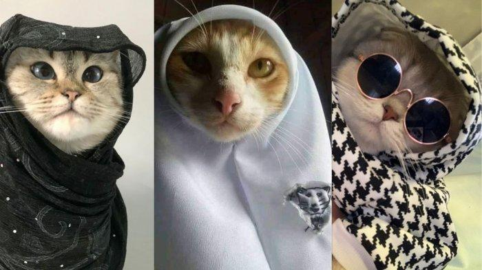
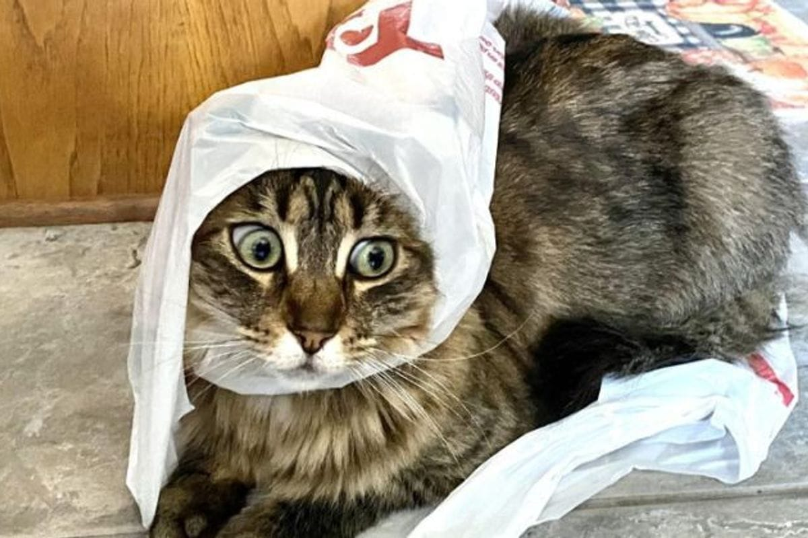

cats are very aesthetically attractive animals. They have a beautyful body shape, with graceful curves and flexible movement. Their smooth fur and varied colors and patterns add to the cat's visual appeal. Apart from that, the cat's facial expression, which seems always calm and full of mystery, also has its own charm. From an aesthetic point of view, cats can be seen as a representation of balance, harmony and perfection of form. A cat's agile and graceful movements reflect aesthetic principles such as rhythm, proportion, and harmony. Cat's are also often considered symbols of elegance, poise, and independence-values valued in many aesthetic traditions. In art and design, cat's are often used as a motif or inspiration because of their beauty and visual appeal. The shape and pattern of a cat's fur, as well as its facial expressions, have been widely explored by artist and designers to create aesthetic works. Philosophically, cat's can also be seen as representing the balance between independence and dependence. The independent nature of cat's, but also the need for affection, reflects the complexity and beauty of life.
Hello friend!
What do you think about cats?
Cats are one of my favorite animals.
Cats have long been companions to humans, but not just as ordinary pets. They are adorable creatures that have captured the hearts of humans for centuries with their cute behavior and charming appearance.
From their large, sparkling eyes to their graceful movements, cats have an undeniable allure. It's no wonder that many people fall in love with these gentle animals.
Not only are they physically captivating, but their cute and adorable nature also adds to their charm. Who isn't entertained by the playful antics of cats as they play with small toys or chase their own shadows?
Moreover, their habit of lounging in the sunlight or sitting by the window, observing the world outside, also makes them incredibly endearing.
Cats are also known for their often funny and adorable facial expressions. From cats blinking innocently to those giving sharp looks when they feel pampered, every cat facial expression has its own appeal.
Not only adorable in appearance, but cats also have fascinating personalities. They can be loyal guardians, but also have a gentle and affectionate side when they lie in their owner's lap.
In many cultures, cats are often considered as bringers of luck or symbols of wisdom. This adds to their appeal as animals that are more than just ordinary pets.
With their unparalleled charm, it's no wonder that cats have become one of the most popular pets worldwide. From ancient times to the present, cats continue to captivate the hearts of humans with their adorable and cute presence.
Berikut ini adalah gambar kucing
 
Cats have long been companions to humans, but not just as ordinary pets. They are adorable creatures that have captured the hearts of humans for centuries with their cute behavior and charming appearance.
From their large, sparkling eyes to their graceful movements, cats have an undeniable allure. It's no wonder that many people fall in love with these gentle animals.
Not only are they physically captivating, but their cute and adorable nature also adds to their charm. Who isn't entertained by the playful antics of cats as they play with small toys or chase their own shadows?
Moreover, their habit of lounging in the sunlight or sitting by the window, observing the world outside, also makes them incredibly endearing.
Cats are also known for their often funny and adorable facial expressions. From cats blinking innocently to those giving sharp looks when they feel pampered, every cat facial expression has its own appeal.
Not only adorable in appearance, but cats also have fascinating personalities. They can be loyal guardians, but also have a gentle and affectionate side when they lie in their owner's lap.
In many cultures, cats are often considered as bringers of luck or symbols of wisdom. This adds to their appeal as animals that are more than just ordinary pets.
With their unparalleled charm, it's no wonder that cats have become one of the most popular pets worldwide. From ancient times to the present, cats continue to captivate the hearts of humans with their adorable and cute presence.
Berikut ini adalah gambar kucing
This video show how's cute cats
Klik di sini untuk beralih ke Halaman website .